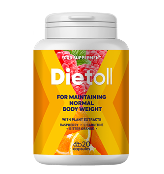
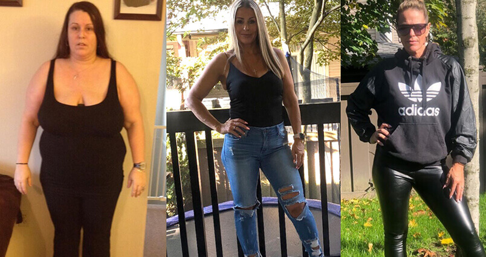

45 de ani nu este o sentință, ci timpul potrivit pentru a începe o nouă viață.
Cum să slăbești cu 25 de kilograme și să te căsătorești cu un bărbatul visurilor - întreabă-mă.Până de curând, duceam o viață obișnuită de femeie singură. Fiul a plecat de mult timp într-un alt oraș și și-a întemeiat o familie acolo. Așteptarea obositoare a vacanțelor pentru ca să-mi pot vedea nepoții este singura bucurie a vieții. Serviciul, alimentara, casa. Și așa an după an. Scriu și mă îngrozesc, mulțumesc lui Dumnezeu că acea viață mizerabilă a rămas în trecut.
Sunetul unui apartament gol mă ucidea încet. După divorț, nu aveam pentru cine gătii, iar pentru sine îmi era lene. În ultimii ani, mâncarea din supermarket m-a îngrășat până la dimensiuni imense. Plus munca sedentară de contabil. Voila! Cântarul arată 100 kg. Mă priveam în oglindă și eram dezgustată de mine. Nu îmi rămânea nimic altceva decât să mă împac cu faptul că îmi voi petrece restul vieții în compania pisicilor mele.
Împreună cu grăsimea, am acumulat și niște cu complexe, iar imaginea din oglindă îmi tăia orice dorință de a cunoaște pe cineva. Maximum - la locul de muncă. În pofida faptului că o mare parte din colegii mei din compania de construcții erau bărbați, nu mă simțeam o femeie. Mă tratau ca pe un prieten. Nimeni niciodată nu se sfia să eructeze în prezența mea, să spună o glumă proastă sau despre aventurile sexuale de aseară. Pe scurt, am suferit mult…
Punctul de fierbere a fost atins atunci când, din întregul personal feminin de 7 persoane, eu sunt singura care rămăsese fără cadou la o sărbătoare corporativă cu ocazia aniversării fondării companiei. Au uitat de mine. Până seara târziu, am stat în birou, în speranța că colegii mei vor veni la mine cu felicitări. În cele din urmă a plecat acasă fără buchet și cadouri.
Îmi amintesc că am plâns jumătate de noapte îmbrățișând o sticlă de vin. Eram atât de supărată că nu puteam înghiți nicio bucățică. M-am îmbătat imediat. Am început să trimit SMS de om beat celor care m-au supărat. După ce m-am trezit dimineața, le-am șters altfel aș fi murit de rușine. Nu așa am vrut să atrag atenția bărbaților.
Mi-am dat seama că trebuie să schimb ceva. Am sunat-o pe nora să mă sfătuiască ceva. Poate ceva cosmetice, poate vreun parfum, poate o tunsoare nouă. Sunt zero la acest capitol. Ea mi-a sfătuit capsule . Este un produs pentru pierderea în greutate. Am comandat ambele.
Despre capsule vă voi spune o altă dată, în comparație cu pierderea în greutate ridurile pentru mine sunt secundare.
Nu pot spune că 25 de kilograme s-au evaporat instantaneu, dar starea mea s-a îmbunătățit în câteva zile. Imediat cum a început să iau acest produs, am observat că în mod constant dorința de a mânca ceva la o ceașcă de cafea a dispărut. Pentru prima dată, bolul cu bomboane a rămas neatins. Seara, frigiderul practic nu îl deschideam. Și ghiftuitul de seară a dispărut.
Burta devenea mai mică pe zi ce trece. La curea apăreau găuri noi, dar spre micșorare, nu ca de obicei. După 2 săptămâni, pantalonii și blugii erau mai largi cu o palmă.
O lună mai târziu, cântarul arăta minus 17 kg. N-am făcut nimic deosebit pentru asta! Sincer.
Am băut doar și mâncam ca de obicei: carne, paste, pește, chiar și prăjituri, doar că porțiile de mâncare au scăzut semnificativ. A apărut o senzație de ușurință pe care probabil nu am simțit-o niciodată, deși că nu mi-a fost foame deloc.
Și, cât nu ar fi de trist,, dar într-adevăr lumea te întâmpină în funcție de exterior, chiar și vânzătorul din magazin a devenit mai prietenos ca de obicei și îmi făcea complimente. Și, într-adevăr, mă simțeam mai bine, spatele s-a îndreptat imediat de parcă mi-au crescut aripi.

O astfel de femeie atrage bărbații, fetelor! În jurul meu au apărut imediat bărbați care mă curtau. Cineva mă ajuta să duc o pungă grea la mașină, altcineva îmi ceda locul la parcare sau la coadă. Iar cineva pur și simplu îmi făcea cinste cu o cafea într-o cafenea. Așa l-am cunoscut pe Mircea meu. Și m-am îndrăgostit ca o elevă. Corespondență, conversații lungi la telefon, așteptări de întâlnire.
Să spun că sunt șocată - parcă nu aș spune nimic. Dacă întâlniți undeva a doua mea bărbie și pliurile de grăsime, spuneți-le să nu se întoarcă, mă simt bine fără ele! Mă privesc în oglindă și văd o femeie tânără și atractivă, deși acum o lună vedeam o vacă imensă, plină de grăsime.
Nu o vă voi spune povești lungi, doar uite din nou la poza mea:
Și mai multă bucurie pentru mine a fost actualizarea garderobei. Fetelor, nu vă puteți imagina fericirea mea de pentru a schimba hainele largii, în care îmi ascundeam faldurile de grăsime, de mărimea 2XL pe rochii frumoase și la modă de mărimea M.
În total, timp de o lună și jumătate cu , am pierdut 25 de kilograme.
Acum, greutatea mea este de 69 kg, ceea ce este perfect pentru mine. Mă uit la pozele mele vechi și nu vreau să mă întorc. Mă simt o femeie sănătoasă, zbor. Mă simt dorită, atractivă. În ochii mei strălucește fericirea, mă înțeleg perfect cu bărbatul iubit, sunt plină de dragoste și pasiune.
Nici nu am reușit să clipesc din ochi cum Mircea m-a înlănțuit :) Pentru amândoi este a doua căsătorie, așa că am decis să sărbătorim în liniște, în cercul familiei. Părinții și fiica lui Mircea m-au acceptat cu căldură. Mircea a mutat lucrurile mele în casă sa, am decis să locuim pe teritoriul său.
Așa să fie. Am obosit să târâi totul în spatele meu, aș vrea să conducă bărbatul, mă voi bucura de o viață nouă. Așadar, fetelor, dragele mele, nu renunțați! În niciun caz! Dacă subiectul excesului de greutate este relevant pentru dvs., încercați . M-a ajutat pe mine și vă va ajuta și pe voi cu siguranță.


COMENTARII: